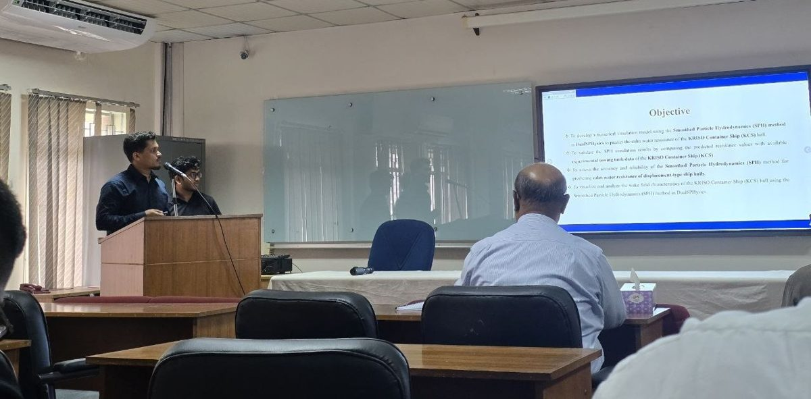
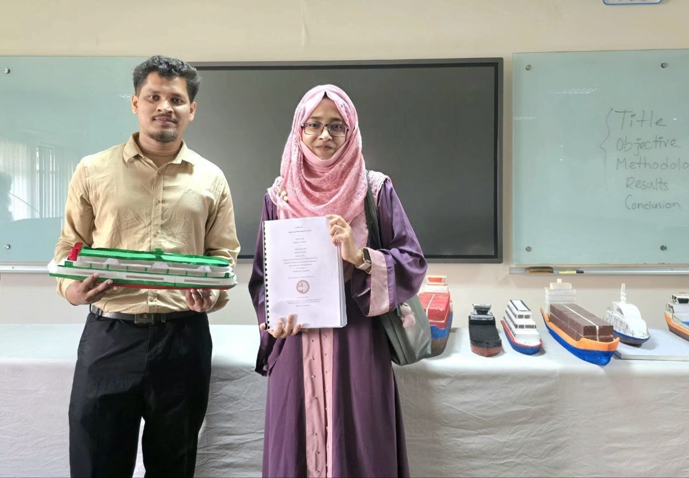

Naval architect working on mesh-free ship hydrodynamics
I use Smoothed Particle Hydrodynamics (SPH) to predict how ships move through water. My undergraduate thesis built a numerical towing tank that matched experimental calm-water resistance of the KCS container ship to within 6.5%, and I am now extending it to waves.
A sketch of an SPH towing tank: water is represented as particles rather than a mesh. Particles here are 9 px apart, a nod to the 9 mm spacing my thesis convergence study selected.
About
I completed my B.Sc. in Naval Architecture and Marine Engineering at the Bangladesh University of Engineering and Technology (BUET) in June 2026, majoring in hydrodynamics and structure, with a CGPA of 3.57 / 4.00 (3.89 in my final semester) and a class rank of 8 out of 55.
My research applies Smoothed Particle Hydrodynamics, a mesh-free CFD method, to ship hydrodynamics. For my undergraduate thesis, supervised by Dr. Md. Mashiur Rahaman, I developed a numerical towing tank in the GPU-accelerated DualSPHysics solver and predicted the calm-water resistance of the KCS hull across Froude numbers 0.152 to 0.282. I am now extending the validated model to regular head waves to predict added resistance and heave–pitch motions.
Alongside the hydrodynamics, my training covers ship structures and finite element analysis. As part of BUET's Team Black Pearl, I carried out the structural design of an aluminium catamaran ferry that placed 3rd globally in the Worldwide Ferry Safety Association's International Student Design Competition in 2026.
I am applying for graduate study in the United States.
Research interests
Smoothed Particle Hydrodynamics (SPH)
Computational Fluid Dynamics (CFD)
Ship Hydrodynamics
Fluid–Structure Interaction
Free-Surface and Multiphase Flows
Fluid Mechanics
Finite Element Method
Structural Analysis of Marine Structures
Heat Transfer
Research & projects
Sep 2026 – Present
Ongoing research
Added resistance and heave–pitch motions of the KCS hull in regular head waves
Supervisor: Dr. Md. Mashiur Rahaman, Dept. of NAME, BUET
Extending the calm-water SPH model to regular head waves to predict added resistance and heave–pitch motions of the KCS hull in DualSPHysics.
Project details
Builds directly on the validated calm-water numerical towing tank from my thesis.
Predictions are being validated against published towing tank data.
Free-surface flow features in waves are compared with the calm-water condition.
Apr 2025 – Jun 2026
Undergraduate thesis
Prediction of calm water resistance of a ship using Smoothed Particle Hydrodynamics
Supervisor: Dr. Md. Mashiur Rahaman, Dept. of NAME, BUET
Applied the mesh-free SPH method to predict the calm-water resistance of the KCS hull using the GPU-accelerated DualSPHysics solver, validated against experimental towing tank data.

Presenting my thesis with my thesis partner Shafollo Proshad Gupto at the Department of NAME, BUET.Project details
< 6.5%error against towing tank data
0.152–0.282Froude number range
9 mmoptimal particle spacing
Developed a numerical towing tank for the KCS hull in DualSPHysics.
Ran a convergence study across particle resolutions from 8 mm to 11 mm and identified 9 mm as the optimal spacing.
Processed simulation output with Python and ParaView.
Result figures will be added here once the manuscript is published.
Sep 2025 – Mar 2026
International design competition, 3rd place (global)
RoPax ferry for the Niger River, Nigeria
Worldwide Ferry Safety Association, 13th International Student Design Competition. Faculty advisor: Dr. Zobair Ibn Awal, Dept. of NAME, BUET
A ferry for 200 passengers and their personal and market cargo between Lokoja and the trading city of Onitsha. I worked on the structural design and stability analysis.
Niger Drift, the team's catamaran design (team render).Project details
3D model of the hull structural membersIntact stability: GZ curves for three loading conditionsDamage stability: one of the flooded-compartment cases
Structural scantling calculations to Bureau Veritas (BV) rules for an Aluminium-5086 longitudinally framed catamaran, including the midship section design.
Detailed lightship weight estimate, and longitudinal strength checks under normal and grounding conditions.
Intact stability, probabilistic damage stability, floodable length and seakeeping analyses in MAXSURF to verify compliance with IMO/SOLAS criteria.
The team presented the design at the WFSA Ferry Safety and Technology Conference in May 2026.
Jan 2024 – Feb 2025
Junior year project
Inland passenger ferry for 50 cars and 700 passengers, Dhaka–Hatiya–Dhaka
Supervisor: Dr. Goutam Kumar Saha, Dept. of NAME, BUET
A complete ferry design for a narrow, congested inland route, taken from hydrostatics through to a 3D-printed scale prototype.

The 3D-printed scale model, with my project partner Tairim Marzia Dina and our design report.Project details
74.45 mlength overall
13.6 mbreadth
1.6 mdraft
15 knservice speed
General arrangement plan: elevation and deck layoutsMidship section with scantlings to ABS rules
Hydrostatic, stability, resistance and powering analyses.
Scantling calculations to ABS rules, with 2D drawings in AutoCAD.
3D CAD model in Rhinoceros and a scaled prototype fabricated by 3D printing.
Used a mechanically driven Z-drive azimuthal propulsion system instead of a conventional shaft and rudder, for better manoeuvrability and shallow-water operation.
Jun 2024 – Jul 2024
Industrial internship
Intern, Dockyard & Engineering Works Ltd.
Bangladesh Navy, Narayanganj, Bangladesh
Hands-on exposure to a working shipyard, from machining and welding to launching and berthing. View certificate
Project details
Observed CNC machining, welding, marine propulsion systems, shipboard air conditioning and thermal management of engine rooms.
Followed core shipbuilding operations: launching, berthing, piping and painting.
Learned shipyard management practices, including tendering and multidisciplinary coordination.
Publications & presentations
Comparative Assessment of Accuracy and Computational Efficiency of Mesh-Based and Mesh-Free CFD Methods for Ship Resistance Prediction
S. P. Gupto, A. Ahmed, S. S. S. Shouvik, and M. M. Rahaman
Manuscript in preparation, 2026
Design of the Niger Drift passenger ferry
M. K. M. Zidan, M. A. Rahaman, M. K. Islam, S. P. Gupto, A. Ahmed, S. Tubash, and A. Mondal
Team presentation, Worldwide Ferry Safety Association (WFSA) Ferry Safety and Technology Conference
B.Sc. in Naval Architecture and Marine Engineering
Bangladesh University of Engineering and Technology, Dhaka
CGPA 3.57 / 4.00 (3.89 in final semester). Class rank 8 / 55. Major: Hydrodynamics and Structure.
Relevant coursework
Fluid Mechanics
Marine Hydrodynamics
Computational Fluid Dynamics
Resistance and Propulsion of Ships
Heat Transfer
Power and Propulsion Systems
Advanced Ship Structure
Ship Vibration
Finite Element Method for Ship Structure
Honours & awards
Mar 20263rd Place (Global) and US$1,000 prize, 13th Annual International Student Design Competition for Safe and Affordable Ferry, Worldwide Ferry Safety Association, with Team Black Pearl. View certificate
20262nd Place and BDT 2,000 prize, NAME Olympiad (Senior Category), NAME FEST, BUET
2022, 2024, 2025University Merit Scholarship, BUET, for academic excellence
Jan 2026Fire Fighting, Fire Prevention, Rescue and First Aid Training, Bangladesh Fire Service & Civil Defence Directorate, held at Dept. of NAME, BUET. View certificate
Tools I work in
Simulation
DualSPHysics, ANSYS Fluent, ABAQUS
Programming
Python, C, C++, Fortran, MATLAB
CAD & 3D modelling
Rhinoceros 3D, Orca3D, AutoCAD
Ship design
MAXSURF, DELFTship
Post-processing & writing
ParaView, LaTeX, Zotero
Office
Word, Excel, PowerPoint
Beyond academics
2023, 2026Volunteer, NAME FEST, Dept. of NAME, BUET